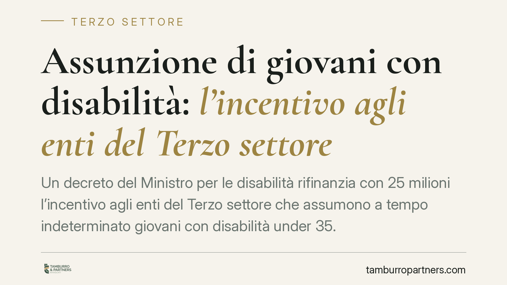

Assunzione di giovani con disabilità: l'incentivo agli enti del Terzo settore
Un decreto del Ministro per le disabilità rifinanzia con 25 milioni l'incentivo agli enti del Terzo settore che assumono a tempo indeterminato giovani con disabilità under 35. La misura vale 12.000 euro una tantum più 1.000 euro mensili fino al 31 dicembre 2026. Conta perché il fondo è limitato e ripartito in proporzione alle domande: chi si muove per tempo tutela l'importo atteso.

Il quadro
Un nuovo decreto del Ministro per le disabilità, adottato di concerto con il Ministero del lavoro, rifinanzia con 25 milioni di euro l'incentivo destinato agli enti del Terzo settore che assumono a tempo indeterminato giovani con disabilità di età inferiore a 35 anni.
L'incentivo si articola in due componenti: un contributo una tantum di 12.000 euro e un'erogazione mensile di 1.000 euro riconosciuta fino al 31 dicembre 2026. Il beneficiario tipico è l'ente iscritto al RUNTS (il Registro unico nazionale del Terzo settore, la banca dati che raccoglie associazioni, fondazioni e altri enti riconosciuti dal Codice del Terzo settore).
Inquadramento normativo
La misura si inserisce nel solco degli incentivi introdotti per l'inclusione lavorativa delle persone con disabilità presso gli enti non profit. Il perimetro applicativo, gli importi e le modalità di riparto sono definiti dal decreto ministeriale attuativo, che rinvia per i requisiti soggettivi alla disciplina del collocamento mirato di cui alla legge 68/1999 (la legge che regola l'inserimento lavorativo delle persone con disabilità).
Un'avvertenza di metodo. Alla data di questo contributo alcuni estremi restano da consolidare: gli estremi completi del decreto (numero e data di pubblicazione in Gazzetta Ufficiale), la norma istitutiva del fondo con il comma specifico e il termine esatto di presentazione delle domande. Preferiamo segnalarlo apertamente piuttosto che riportare dati parziali. Prima di ogni decisione, verificate il testo pubblicato in G.U. e le istruzioni operative dell'ente gestore.
Come funziona il riparto
Il punto centrale è il meccanismo di riparto proporzionale. Il fondo ha un tetto: 25 milioni. Se le domande ammissibili superano la capienza, le risorse vengono distribuite in proporzione tra i richiedenti. In pratica, l'importo effettivamente riconosciuto può risultare inferiore a quello nominale.
La conseguenza operativa è diretta: la prevedibilità dell'incentivo dipende dal numero complessivo delle richieste, che nessun singolo ente controlla. Presentare una domanda completa e tempestiva riduce il rischio di esclusione formale, ma non garantisce l'importo pieno.
Il termine del 31 dicembre 2026
La componente mensile è ancorata a una data fissa: 31 dicembre 2026. Questo significa che l'importo complessivamente percepibile diminuisce quanto più tardi avviene l'assunzione. Chi assume a inizio periodo cumula più mensilità; chi assume in prossimità del termine ne perde una quota rilevante. Anticipare l'assunzione, ove sostenibile sul piano organizzativo, massimizza il beneficio.
Domanda e piattaforma
Un nodo pratico riguarda il canale di presentazione. Misure analoghe di incentivo all'assunzione transitano tipicamente dai portali dell'INPS o da piattaforme del Ministero: la domanda va presentata secondo le modalità telematiche indicate dal decreto e dalle successive istruzioni dell'ente gestore. Finché la modulistica e la piattaforma non sono ufficialmente rese disponibili, evitate iniziative informali: fa fede la procedura pubblicata.
Cumulabilità e coordinamento con la legge 68/1999
Due profili interpretativi meritano attenzione.
Il primo è la cumulabilità con altri sgravi o incentivi all'assunzione di persone con disabilità. La regola generale nel diritto del lavoro è che gli incentivi non si cumulano oltre il costo effettivamente sostenuto per il lavoratore, salvo diversa previsione della norma istitutiva. Va quindi verificato caso per caso se questo contributo sia alternativo o cumulabile con altre agevolazioni.
Il secondo riguarda il rapporto con la quota d'obbligo ex legge 68/1999. Occorre accertare se il lavoratore assunto con l'incentivo sia computabile nella quota di riserva a carico dell'ente: la risposta incide sia sul piano contributivo sia su quello degli obblighi di assunzione. In assenza di indicazione espressa nel decreto, la questione va risolta alla luce dei principi generali del collocamento mirato.
Cosa fare in concreto
- Verificate l'iscrizione dell'ente al RUNTS e la sua regolarità: è il presupposto soggettivo dell'accesso.
- Attendete e consultate il testo del decreto pubblicato in G.U. per confermare importi, requisiti e termine esatto di presentazione.
- Individuate il canale telematico ufficiale di domanda e predisponete in anticipo la documentazione richiesta.
- Programmate l'assunzione per tempo: ogni mese guadagnato prima del 31 dicembre 2026 aggiunge una mensilità.
- Fate valutare la cumulabilità con altri incentivi e la computabilità del lavoratore nella quota d'obbligo prima di formalizzare l'assunzione.
Disclaimer
Contributo informativo a cura di Tamburro & Partners - Avv. Giuseppe Tamburro. Non costituisce parere legale.
Ogni ente del terzo settore ha la sua storia.
Se rappresenti un ETS e vuoi un confronto su governance, RUNTS o fiscalità, scrivi allo studio. Ti rispondiamo entro un giorno lavorativo.